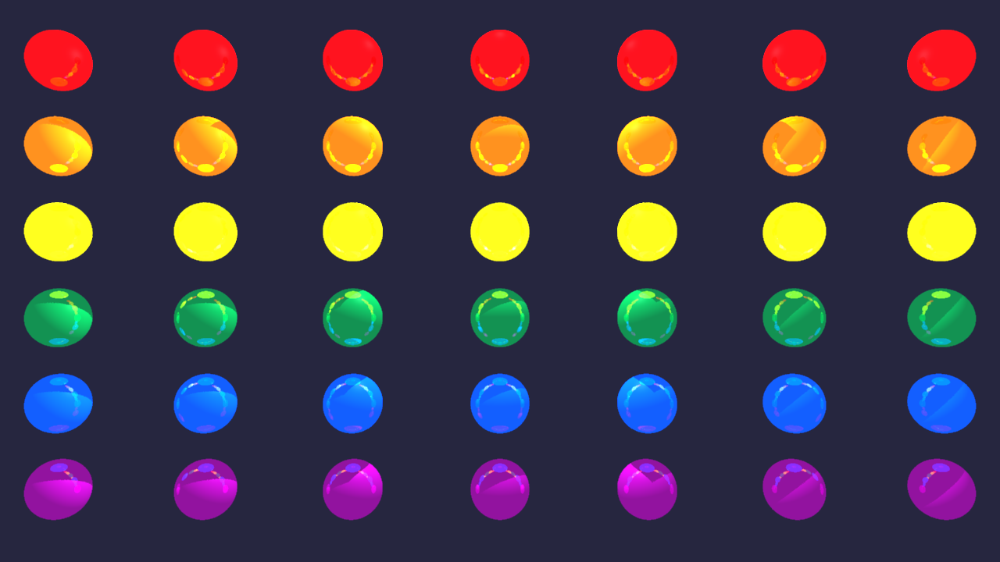

}
def subsection_three(left, center, right, content){
$$left
$$center
$$right
$$content
}
def subsection_three_simple(left, center, right){
$$left
$$center
$$right
}
def subsection_two_simple(left, right){
$$left
$$right
}
sujit-saravanan
Resume
sujitsaravanan15@gmail.com
(571) 361-9963
Sujit Saravanan
https://sujit-saravanan.github.io/portfolio/
https://github.com/sujit-saravanan
Profile
Computer Science student at Penn State, with a strong
passion for systems programming and writing clean, performant code. Key strengths include a deep
understanding of Data Oriented Design philosophies, low level hardware design, and graphics
programming.
Education
subsection_three_simple({University Park}, {Pennsylvania State University},
{Fall 2020 - Fall 2023})
subsection_two_simple({
A Vulkan pathtracer that makes use of clever datastructures, sampling methods, and irradiance caching to render billions of voxels at hundreds of frames a second, with full global illumination.
An extremely performant text editor that makes use of modern OpenGL and Data Oriented
Design philosophies. Features a vector of gap buffers in order to reduce the impact of
having to insert characters into a string.
A pipelined microcontroller designed in Verilog, that is capable of running MIPS
assembly. It contains built in memory for both instructions as well as data, and
supports forwarding between stages in order to avoid stalls.
A performant, opinionated build system and project initialization/management tool that
automatically generates CMakeLists.txt files based on the include tree of the project's
module headers.
}
)
subsection_two({Fast List (2022):}, {C; C++; JetBrains IDE},
{
A linked list implementation designed around minimizing cache misses and amortizing
memory overhead. Benchmarks indicate a 3-5x performance improvement over std::list for
standard operations.
}
)
Employment
subsection_three({Employee}, {Penn State Learning Factory Full Stack Developer Intern}, {Summer 2023}, {
Analayzed inefficiencies in the Learning Factory's processses.
Developed the frontend and backend for a web dashboard which saved 700 sheets of paper every semester.
Followed Agile philosophies in order to maintain productivity and communication with my client/manager.
Frontend made use of vanilla JavaScript, while the backend was a custom C++ web server.
Something I noticed while completing my CMPSC 458 raytracing project, is how excruciatingly long it took to complete rendering even basic scenes. More complicated images with high quality anti-aliasing would take upwards of 5 minutes for a single frame. This motivated me to perform some exploration on my own time on how to achieve fast, software raytracing on the CPU.
Conventional raytracing is unsuited for the CPU, even with acceleration structures, as it would require performing billions of expensive shape intersection computations every second. Fortunately, in recent times, major development has gone on in the field of voxel raytracing.
Voxels, compared to their polygonal cousins, are extremely easy to test intersections against, as they're consistently sized and snapped to the 3d axis. There are many algorithms designed to perform such tests, one algorithm in particular, Digigal Differential Analyzer, was especially suitable as it required very little computation and could be made branchless.
One of the main advantages GPUs have over a more conventional processor is their, quite frankly speaking, absurd parallel compute abilities. Even a low end GPU has well over a thousand cuda cores, running at a billion cycles a second. Fortunately, modern processors are also quickly becomming parallel behemoths. Through the power of multithreading and SIMD intrinsics, I was able to achieve reasonable initial results when it comes to performance.
As of right now, I am able to render a few hundred voxels at 1080p, 20fps on my laptop's R5 4600H. I believe that there is room for significant performance improvement through a rewrite of my SIMD code, which is currently less than optimal, and the implementation of a Brickmap Acceleration Structure. The latter would DRAMATICALLY reduce the number of voxels the CPU has to traverse for every single pixel in the frame. Napkin math indicates the room for a 10-100x performance improvement with the aforementioned optimizations.
This course challenges students to learn the approaches and mathematical techniques that allow a computer to digitally render a scene, as well as advanced methods of image analysis yielding more realistic textures and environments. Topics include transformation, projection, illumination models, shading, hidden lines/surface elimination, viewing, color, raytracing, physics-base graphics, and image based redering, in particular image-based texture synthesis.
I found this course especially interesting as it covered a topic I personally enjoyed learning about, and had a series of challenging projects that relied on C++, with room for extra credit.
Projects:
Heightmap Renderer
For this project, we were given a series of basic, 2d single channel heightmaps, and were required to render it out as terrain. For extra credit, I chose to render mine out in a style similar to Minecraft's world.
Rollercoaster Simulation
For this project, we were required to take in an input file that described the path of a rollercoaster, and generate the required splines to render the ride. We also had to have a cart that traversed its path. For extra credit, I chose to implement a complete physics system and a controllable player with an interactive environment.
Raytracer
For this project, we were required to implement a basic, CPU raytracer that implemented reflections and refractions. For extra credit, I also introduced support for anti-aliasing.

Yanshee Robot Physics Simulation
For this project, we were required to perform a series of physics simulations to determine what aspects impacted the stability of the Yanshee robot. For extra credit, I also created a script that would automatically position the joints of the robot in the frame.
CMPSC 473: Operating Systems
CMPSC 473: Operating Systems
Description:
This course goes over the role, design, and implementation of various aspects of a conventional Operating System. Not limited to memory management + virtual memory, file systems, and parallel processing.
I was able to obtain a deeper understanding of these topics than what I had previously derived from intuition thanks to this course.
Projects:
Thread Scheduler
For this project, we were given a stream of events that would arrive out of order, and were responsible for implementing various resource management and execution strategies to handle them in a performant manner.
Allocators
For this project, we had to implement a series of custom allocation strategies to handle a sequence of allocation requests while minimizing fragmentation.
Memory Manager
For this project, we expanded upon the previous project by creating a virtual memory system that could page in and out of disk.
CMPSC 483W: Software Design Methods
CMPSC 483W: Software Design Methods
Description:
In this course, We were assigned a client and given a software design project to complete in a team of 5. Our group were given the project of creating a dashboard for Penn State to more efficiently manage this course in the future.
This was arguably the most important course I took in college, as it gave me some initial experience in a more professional, software development environment.
Project Description:
We split this project up into two sections, the frontend and the backend. I mostly worked on the backend while the rest of my teammates aimed to make the most polished frontend possible, as that was what our client would see at the end. Rather than choosing a conventional, javascript based web framework, I ended up creating the backend in C++. I used a combination of cpp-httplib in order to handle requests, and simdjson for fast parsing of the request body.
The server was ultimately hosted in a Penn State server running RHEL, locked behind a staff vpn.
 Start
Start